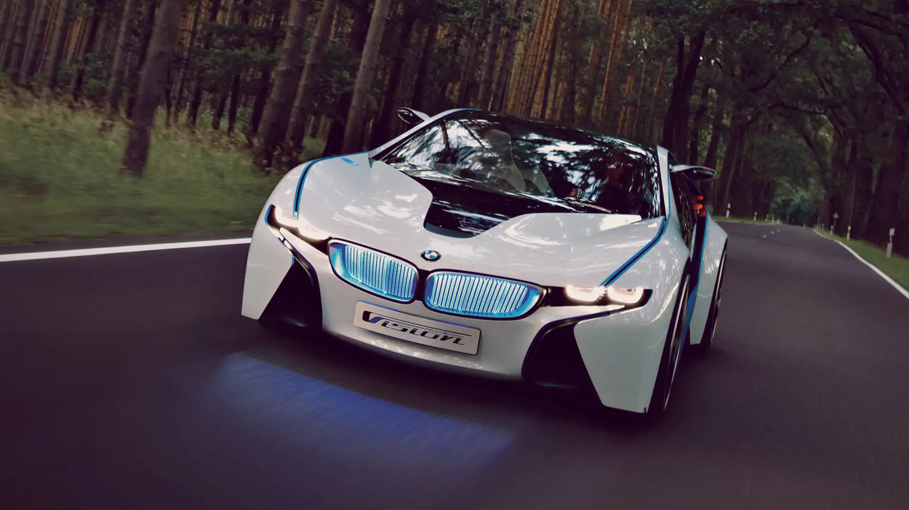
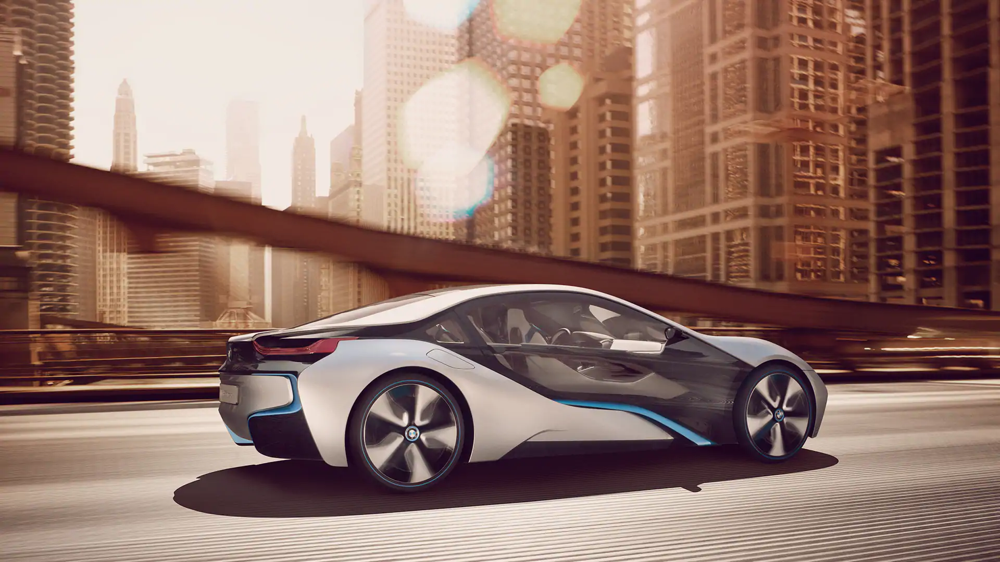
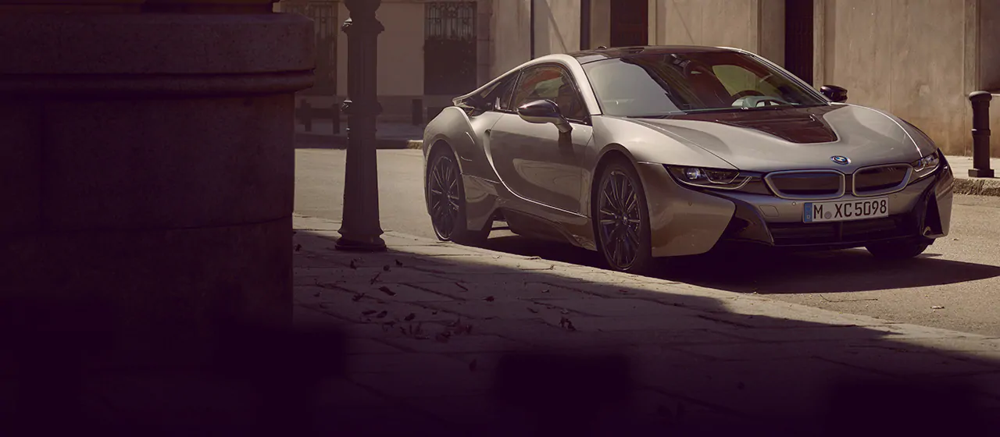

The future is taking shape – in the form of the BMW i8 Coupe. Inspiring, fascinating
and ready to reinterpret mobility. For unconditional sheer driving pleasure that lasts
as long as the road ahead. The mere sight of the iconic design is enough to cause
the adrenaline level to rise. And the rev counter soars to new heights just as quickly.
This is how to enter a new era in record time.
CO2 emissions 42 g/km (combined) Fuel consumption 1.8 l/100 km (combined)
Power consumption 14 kWh/100 km (combined)
5 good reasons for the BMW i8 Silent electric driving in the plug-in hybrid sports car
Coupe From 0 to 100 in 4.4 seconds
Exceptional lightweight construction concept for sporty
Clever navigation thanks to BMW ConnectedDrive
Iconic and futuristic design

Please note that the following information is a label according to German law
(Ordinance on energy consumption labelling for passenger cars).
The driving range depends on a variety of factors, especially: personal driving
behaviour, selected route, weather conditions, usage of heating/cooling
The values of fuel consumptions, CO2 emissions and energy consumptions shown were
determined according to the European Regulation (EC) 715/2007 in the version
applicable at the time of type approval. The figures refer to a vehicle with
basic configuration in Germany and the range shown considers optional equipment
and the different size of wheels and tires available on the selected model.

